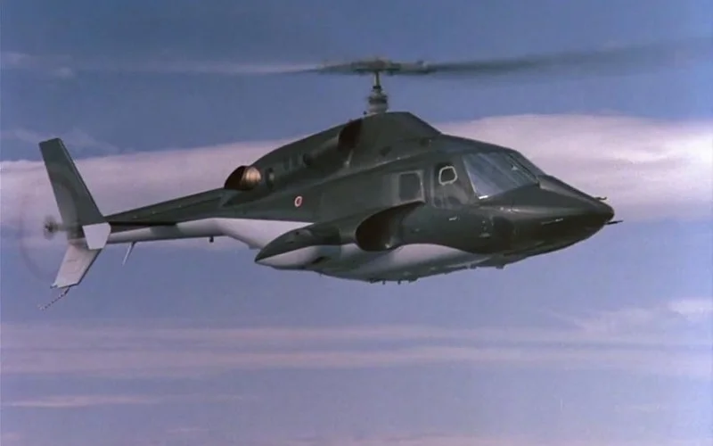
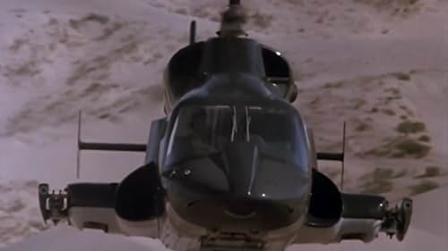
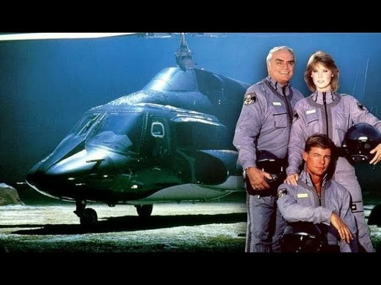

Alta tecnologia nos céus
Águia de Fogo apresentava um helicóptero de combate ultramoderno e suas missões secretas, encantando os fãs de ação aérea e ficção militar.

Helicóptero imbatível

Missões cheias de perigo

Heróis do céu
Exibida entre 1984 e 1987, a série teve 4 temporadas e 80 episódios, com destaque para o realismo das cenas de voo e efeitos visuais marcantes para a época.